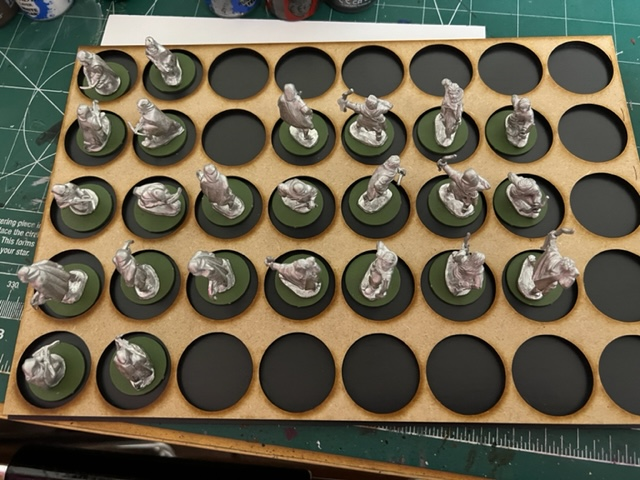

Welcome to Scott's Fall APC 2022
Little wars tv is having a painting competition. It is not a competition, but it is more to set a goal of how many minis to paint and try to reach it.
Miniatures Complete: 28/30
I chose to paint 30 28mm minis. My original list was:
- 8 horses
- 8 riders
- 8 Black Guard
- 6 Greek Slingers
But it is suprising how quickly things change. I now have 16 different minis that I need to paint for SAGA, they are still ancients, so I am going to do them first :)
2022-10-10
Here are 12 archers and 4 beserkers primed and ready
2022-10-11
4 beserkers done!
2022-10-15
12 Bows done! I am ready for my game of SAGA next week. I am changing my Anglo Saxons to 3 bow and 3 levy, or 3 bow and 2 levy and a priest!

2022-11-10
Well, Fall-In changed all my plains for the winter... Look at this box full Picts that need painted.

2022-11-27
The first 12 of my picts are painted. I tried doing more highlighting, but I am not sure if they look better or not